We introduce the basic idea of using rectangles to approximate the area under a
curve.
Rectangles and areas
We want to compute the area between the curve and the horizontal axis on the
interval :
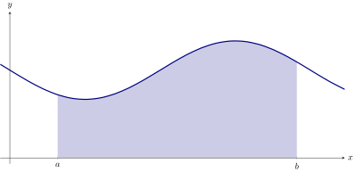
One way to do this would be to approximate the area with rectangles. With one
rectangle we get a rough approximation: 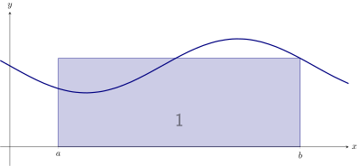
Two rectangles might make a better approximation:
With even more, we get a closer, and closer, approximation: 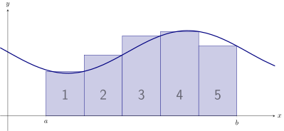
If we are approximating the area between a curve and the -axis on with rectangles
of width , then
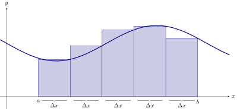
Suppose we wanted to approximate area between the curve and the -axis on the
interval , with rectangles. What is ?
As we add rectangles, we are more closely approximating the area we are interested
in:
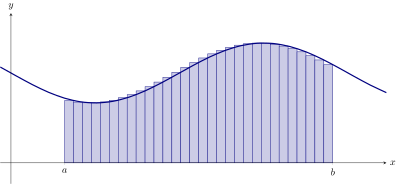
We could find the area exactly if we could compute the limit as the width of the
rectangles goes to zero and the number of rectangles goes to infinity.
Let’s setup some notation to help with these calculuations:
When approximating an area with rectangles, the
grid points are the -coordinates
that determine the edges of the rectangles. In the graph below, we’ve numbered the
rectangles to help you see the relation between the indices of the grid points and the
th rectangle.
Note, if we are approximating the area between a curve and the horizontal axis on
with rectangles, then it is always the case that
If we are approximating the area between a curve and the horizontal axis with
rectangles, how many grid points will we have?
We’ll have grid points.
But which set of rectangles?
If we are going to try and actually use many small rectangles to compute the area
under a curve, we should decide on exactly which rectangles we want to use. We need
another definition:
When approximating an area with rectangles, a
sample point is the -coordinate
that determines the relevant height of our rectangles. We denote a sample point as:
Rectangles defined by left-endpoints
We can set the rectangles up so that the left-endpoint touches the curve.
In the graph above, the th rectangle’s left-endpoint is touching the curve.
Rectangles defined by right-endpoints
We can set the rectangles up so that the right-endpoint touches the curve.
In the graph above, the th rectangle’s right-endpoint is touching the curve.
Rectangles defined by midpoints
We can set the rectangles up so that the midpoint of one of the horizontal sides
touches the curve.
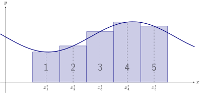
In the graph above, the midpoint of the horizontal side of the th rectangle is touching
the curve.
Riemann sums and approximating area
Once we know how to identify our rectangles, we can compute some
approximate areas. If we are approximating area with rectangles, then
A sum of the form: is called a
Riemann sum, pronounced “ree-mahn”
sum.
A Riemann sum computes an approximation of the area between a curve and
the -axis on the interval . It can be defined several different ways. In our
class, it will be defined via left-endpoints, right-endpoints, or midpoints.
Here we see the explicit connection between a Riemann sum defined by
left-endpoints and the area between a curve and the -axis on the interval :
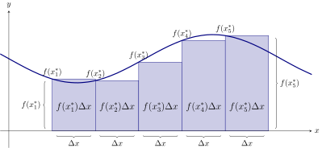
and here is the associated Riemann sum
Left Riemann sums
Consider . Approximate the area between and the -axis on the interval using a
left-endpoint Riemann sum with rectangles.
First note that the width of each rectangle is The grid points define the edges of the
rectangle and are seen below:
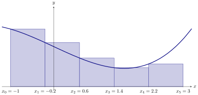
On the other hand, the sample points identify which endpoints we use:
It is helpful to collect all of this data into a table: Now we may write
a left Riemann sum and approximate the area which evaluates to
and we find
Right Riemann sums
Consider . Approximate the area between and the -axis on the interval using a
right-endpoint Riemann sum with rectangles.
First note that the width of each rectangle is The grid points define the edges of the
rectangle and are seen below:
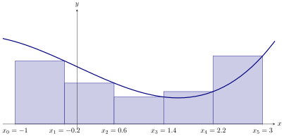
On the other hand, the sample points identify which endpoints we use:
It is helpful to collect all of this data into a table: Now we may write
a right Riemann sum and approximate the area which evaluates to
and we find
Midpoint Riemann sums
Consider . Approximate the area between and the -axis on the interval using a
midpoint Riemann sum with rectangles.
First note that the width of each rectangle is The grid points define the edges of the
rectangle and are seen below:
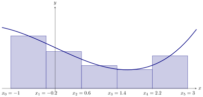
On the other hand, the sample points identify which endpoints we use:
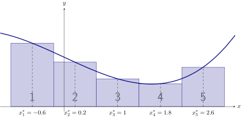
It is helpful to collect all of this data into a table: Now we may write a
midpoint Riemann sum and approximate the area which evaluates to
and we find
Summary
Riemann sums approximate the area between curves and the -axis via rectangles.
When computing this area via rectangles, there are several things to know:
- What interval are we on? In our discussion above we call this .
- How many rectangles will be used? In our discussion above we called this
.
- What is the width of each individual rectangle? In our discussion above
we called this .
- What points will determine the height of the rectangle? In our discussion
above we called these sample points, , and they can be left-endpoints,
right-endpoints, or midpoints.
- What is the actual height of the rectangle? This will always be .